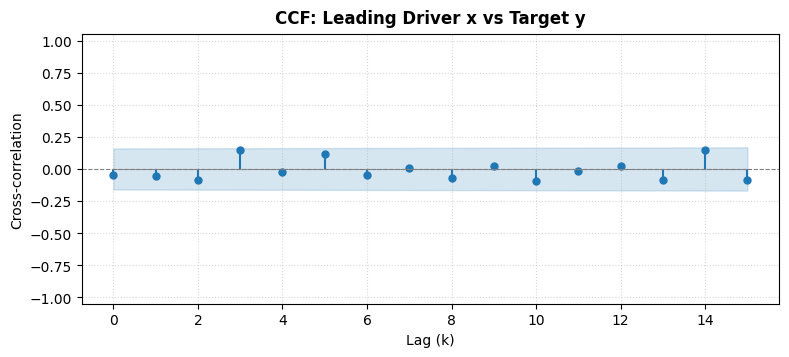

Diagnostic plotting utilities for time series analysis and forecasting workflows, including Cross-Correlation (CCF), Autocorrelation (ACF), and Partial Autocorrelation (PACF) visualizations with support for single series and multi-series subplot grids.
Cross-Correlation Function (CCF) Plotting
plot_ccf (and alias ccf_plot) visualizes the sample cross-correlation between two time series \(x_t\) (e.g., exogenous driver) and \(y_t\) (e.g., target series) across multiple forward lags, along with statistical confidence intervals.
def plot_ccf( x:ArrayLike, # First time series (e.g. predictor or input series x_t). y:ArrayLike, # Second time series (e.g. target or output series y_t). lags:int=20, # Number of forward lags to compute and plot (lags 0 through lags). alpha:float=0.05, # Significance level for confidence intervals (e.g. 0.05 for 95% CI). adjusted:bool=True, # If True, uses lag-specific adjusted CI (z / sqrt(n - k));# if False, uses fixed white-noise CI (z / sqrt(n)). figsize:tuple[float, float]=(10, 4), # Figure dimensions (width, height) in inches. Ignored if `ax` is provided. title:str|None=None, # Custom title for the plot. If None, defaults to "Cross-Correlation Function (CCF)". ax:plt.Axes |None=None, # Target matplotlib axes to draw on. If None, a new figure is created. color:str='#1f77b4', # Color for stem markers and lines.)->plt.Axes: # The axes object containing the CCF plot.
Plot the sample cross-correlation function (CCF) between two time series.
# Example: Plot CCF for a single pair of time seriesnp.random.seed(42)x_series = np.random.normal(size=150)y_series = np.roll(x_series, 2) +0.3* np.random.normal(size=150)ax = plot_ccf(x_series, y_series, lags=15, figsize=(9, 3.5), title="CCF: Leading Driver x vs Target y")assert ax isnotNoneplt.show()

Multi-Pair Cross-Correlation Plots
plot_ccf_pairs automates the visualization of cross-correlations across multiple candidate predictor features against a primary target time series in a clean subplot grid.
def plot_ccf_pairs( data:pd.DataFrame |dict, # Dataset containing multiple time series. target:str| ArrayLike |None=None, # Target variable (y_t). If `data` is a DataFrame and `target` is a string,# computes CCF between each predictor column and `target`. predictors:Sequence[str] |None=None, # List of predictor column names to evaluate against `target`.# If None, all other columns in `data` are treated as predictors. lags:int=20, # Number of lags to compute for each pair. alpha:float=0.05, # Significance level for confidence intervals. adjusted:bool=True, # Whether to use lag-adjusted confidence intervals. ncols:int=2, # Number of subplot columns in the figure grid. figsize:tuple[float, float] |None=None, # Overall figure dimensions (width, height). If None, calculated automatically based on subplots. color:str='#1f77b4', # Color for stem markers and confidence bands.)->tuple[plt.Figure, np.ndarray]: # The created figure and array of axes.
Plot CCF subplots across multiple pairs or multiple predictors against a target series.
Autocorrelation (ACF) and Partial Autocorrelation (PACF) Plots
plot_acf_pacf provides a versatile diagnostic plotting interface for time series serial dependence.
Key Capabilities:
Flexible Diagnostics:
kind="both": Plots both ACF and PACF.
kind="acf": Plots ACF only.
kind="pacf": Plots PACF only.
Layout Control:
layout="horizontal": Places ACF and PACF side-by-side (\(1 \times 2\)).
Multi-Series Batch Plotting: Pass a single Series, a dictionary, a list of series, or a multi-column DataFrame to generate diagnostic rows for each series in one unified figure.
Parametric Controls: Custom lags, figsize, alpha significance levels, and zero lag toggle.
def plot_acf_pacf( series:ArrayLike | pd.DataFrame |dict, # Time series data to analyze (single 1D series, list of series, or multi-column DataFrame). lags:int=30, # Number of lags to compute and display. kind:Literal['both', 'acf', 'pacf']='both', # Which diagnostic plot(s) to generate. layout:Literal['horizontal', 'vertical']='horizontal', # Subplot orientation when `kind="both"`.# - "horizontal": ACF and PACF side-by-side (1 row, 2 columns per series).# - "vertical": ACF stacked above PACF (2 rows, 1 column per series). alpha:float=0.05, # Significance level for confidence interval bands. zero:bool=False, # Whether to include lag 0 in the plots. Default False focuses on informative lags >= 1. pacf_method:str='ywm', # Estimation method for PACF calculation ('ywm', 'ywadjusted', 'ols', 'ld'). figsize:tuple[float, float] |None=None, # Dimensions (width, height) of the figure. If None, calculated automatically. title:str|None=None, # Custom figure/subplot title or prefix. ax:plt.Axes | np.ndarray |None=None, # Pre-existing axes to draw on (single series only). color_acf:str='#1f77b4', # Color for ACF stem plot and confidence intervals. color_pacf:str='#ff7f0e', # Color for PACF stem plot and confidence intervals.)->tuple[plt.Figure, Union[plt.Axes, np.ndarray]]: # Figure and axes object(s).
Plot Autocorrelation Function (ACF), Partial Autocorrelation Function (PACF), or both. Supports single or multiple time series.